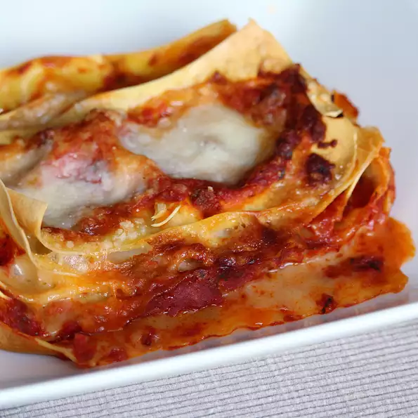

Lasagna

This is the classic lasagne alla Bolognese recipe from the Emilia region in Northern Italy.
The addition of prosciutto, red wine, cinnamon, and nutmeg make it truly authentic.
Ingredients
Bolognese Sauce:
- extra-virgin olive oil
- onion
- carrot
- shallot
- prosciutto
- ground pork
- ground beef
- nutmeg
- cinnamon
- salt
- red wine
- peeled San Marzano tomatoes
White Sauce:
- butter
- flour
- milk
- nutmeg
- salt and gound balck pepper
Lasagna Layers:
- lasagna noodles
- grated Parmesan
Steps
- Heat olive oil in a saucepan over medium heat;
cook and stir onion, carrot, shallot, and prosciutto until onion is translucent and prosciutto releases some fat, about 10 minutes.
Add pork and beef; season with 1 teaspoon nutmeg, cinnamon, and salt to taste. Cook and stir over medium-high heat until browned
and crumbly, about 10 minutes.
- Pour red wine over meat mixture; increase heat and cook until wine evaporates, about 3 minutes. Add tomatoes and mix well; bring to a boil, cover, reduce heat, and simmer, stirring occasionally, until tomatoes break down and flavors of Bolognese sauce have combined, 1 1/2 to 2 hours.
- Melt butter in a saucepan over medium-low heat; add flour. Whisk vigorously until mixture is smooth. Pour in milk and cook, stirring occasionally, over medium heat until white sauce thickens enough to cover the back of a spoon, about 10 minutes;
season with 1/2 teaspoon nutmeg, salt, and pepper.
- Bring a large pot of lightly salted water to a boil. Cook lasagna noodles in the boiling water, stirring occasionally until tender yet firm to the bite, about 8 minutes. Drain and run under cold water to stop the cooking process.
Lay noodles on a clean towel and pat dry.
- Preheat oven to 350 degrees F (175 degrees C).
- Pour a ladleful of Bolognese sauce and a ladleful of white sauce over the bottom of a 9x13-inch baking dish; top with 3 or 4 lasagna noodles. Cover noodles with 1/3 of the white sauce and 1/3 of the Bolognese sauce. Sprinkle some of the Parmesan cheese on top; cover with lasagna noodles. Repeat layers, ending with white sauce and Parmesan cheese.
- Bake in the preheated oven until bubbling and top is golden brown, 30 to 40 minutes. Let stand 3 to 4 minutes before slicing.